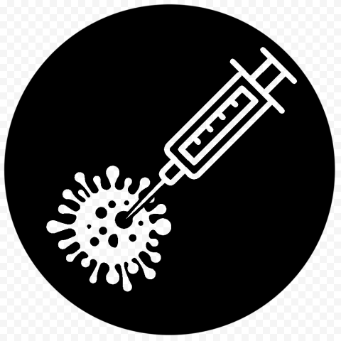

The CoronaNet dataset collects data on government policies made in response to the COVID-19 pandemic for 190+ countries around the world. Data collection began on March 28, 2020 and tracks relevant government policies made since December 31, 2019. In the below, we provide a brief overview of the data available from the CoronaNet database. You can download the complete codebook here.
Each policy entry documents the following information:
[description]: Provides raw text which describes at a minimum, what government initiated a policy, what the policy type is and when the policy type was applied for. Where applicable, it also includes information about the geographical and demographic targets of a policy.
[type]: Categorizes policies into x broad types and y sub-types. Please see chart below for more information.
QuarantineDeclaration of EmergencyLockdownExternal Border RestrictionsInternal Border RestrictionsRestriction of Mass GatheringsSocial DistancingCurfewHealth MonitoringHealth TestingHealth ResourcesClosure and Regulation of SchoolsRestriction and Regulation of Government ServicesRestriction and Regulation of Businesses

COVID-19 Vaccines
[date_announced]: Documents the date in which a policy was announced
[date_start]: Documents the date in which a policy starts
[date_end]: Documents the date in which a policy ends if applicable. If no end date was announced, then this field is left blank.
[country]: Documents the country from which a policy originates from
[init_country_level]: Documents what level of government a policy was initiated from. If the policy was initiated a province or municipality, the name of the sub-national government is noted in the [province] and [city] variables respectively
[target_geog_level]: Documents what geographical jurisdiction a policy was targeted toward.
The country of the geographical jurisdiction is noted in the [target_country] variable.
If applicable, the target province, city or other sub-national target are documented in [target_province], [target_city] and [target_other].
[target_who_what]: Documents whether a policy targets a particular demographic based on their citizenship, residency, or relevance to the health sector
[compliance]: Documents whether the de jure compliance for a policy is voluntary or mandatory and if mandatory, what the compliance mechanism is
[enforcer]: Documents what government body is tasked with enforcing a particular policy, e.g. police, national level government, etc.
There is a unique [record_id] for each policy sub-type, start date, government level initiating a policy combination. Policies are tracked over time with a unique [policy_id]:
Documentation as to whether a policy a new entry or an update is documented in the [entry_type] variable.
If the policy is an update, whether it documents the end of a policy or a change of a policy (e.g. a time extension of a policy) is documented in the [update_type] policy.
If a policy documents a change of a policy, whether a policy is strengthening (e.g. the policy ends later than previously announced) or weakening (e.g. the policy ends earlier than previously announced) is noted in the [update_level] variable.
Meta Data
Each unique policy also includes meta data which documents the:
[recorded_date]: Documents the date and time in which a policy was recorded in the CoronaNet database
[link]: Records the URL link of the primary source from which a policy was documented
[date_updated]: Documents the date at which a researcher last checked to see if a policy existed for a particular level of government and policy type. This data is useful to distinguish between whether a) a government did not institute a particular policy (e.g. school closures) or b) such a policy does empirically exist but our researchers have yet to document it in the CoronaNet database
Terms and Conditions
By using this site or downloading data from CoronaNet, users agree to the following:
To use and/or download the data only for private or personal, non-commercial purposes
To cite the source of the data
To accept disclaimers and restrictions of rights and liability converning the data
Citing CoronaNet
For non-academic purposes, please cite the information in CoronaNet as:
Source: CoronaNet Research Project
For academic purposes, please cite the information in CoronaNet and/or user’s guide using the following citation:
Cheng, Cindy, Joan Barceló, Allison Hartnett, Robert Kubinec, and Luca Messerschmidt. 2020. COVID-19 Government Response Event Dataset (CoronaNet v1.0). Nature Human Behaviour (2020). https://doi.org/10.1038/s41562-020-0909-7